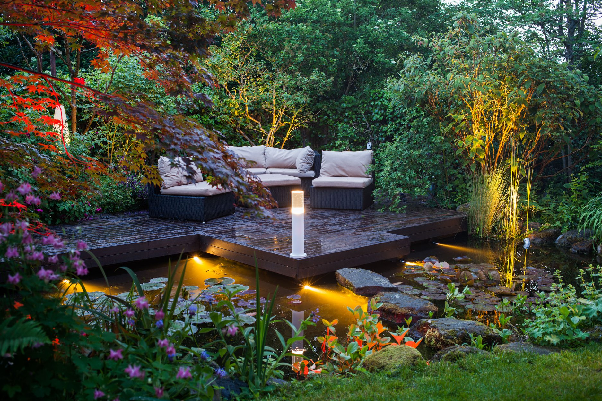

Landshaft dizayni — bu ochiq maydonlar, bog'lar, parklar va boshqa
tabiiy muhitlarni loyihalash va tashkil etish jarayoni. U nafaqat
estetik jihatlarni, balki ekologik va funksional talablarni ham hisobga
oladi. Landshaft dizaynining asosiy jihatlari quyidagilardan iborat: ###
1. **Tadqiqot va rejalashtirish** - **Maydonni o'rganish**: Joyning
tabiiy xususiyatlari, iqlim sharoitlari, tuproq turi va mavjud
o'simliklar. - **Maqsad va ehtiyojlarni aniqlash**: Mijozning
talablarini va foydalanish maqsadlarini tushunish. ### 2. **Estetik
dizayn** - **O'simliklar tanlovi**: O'simliklar, gullar va butalar
tanlash, ularning ranglari, shakllari va mavsumiy xususiyatlari. -
**Rang va kompozitsiya**: O'simliklar va boshqa elementlar orasidagi
rang muvozanati va kompozitsiya. ### 3. **Funktsional elementlar** -
**Yo'llar va yo'nalishlar**: Odamlar va transport uchun qulay yo'llarni
loyihalash. - **O'tirish joylari**: Dam olish va ijtimoiy faoliyat uchun
joylar yaratish. ### 4. **Ekologik jihatlar** - **Tuproqni saqlash**:
Tuproqni muhofaza qilish va unumdorligini oshirish. - **Suv
resurslari**: Suv havzalari va drenaj tizimlarini loyihalash. ### 5.
**Yoritish** - **Yorug'lik manbalari**: Ochiq maydonlarni yoritish,
xavfsizlik va estetik ko'rinishni ta'minlash. ### 6. **Uslub** -
**Landshaft uslublari**: Klassik, zamonaviy, ekologik, minimalistik va
boshqalar. ### 7. **Amalga oshirish va parvarish** - **Ishlarni
bajarish**: Dizaynni amalga oshirish. - **Parvarish qilish**:
O'simliklarning o'sishi va rivojlanishini kuzatish. Landshaft dizayni
nafaqat estetik jihatdan go'zal, balki insonlar uchun qulay va ekologik
jihatdan barqaror muhit yaratishga qaratilgan. Bu soha shahar
infratuzilmasini yaxshilashda, atrof-muhitni saqlashda va odamlarning
hayot sifatini oshirishda muhim ahamiyatga ega.